博客分享 / LLM-Related
大模型原理、训练及微调
本文介绍了大模型的基本原理，代码实现，训练以及微调。
参考视频教程：
【LLMs-Zero-to-Hero，完全从零手写大模型，从数据处理到模型训练，细节拉满，一小时学会。 build a nanoGPT from scratch】 https://www.bilibili.com/video/BV1qWwke5E3K/?share_source=copy_web&vd_source=6a12ba7ef51da47abd221f8d39931c4a
1. 大语言模型原理
此小节以GPT为例，介绍大语言模型的基本架构。
Attention
现有的大语言模型主要基于transformer架构。transformer的核心是注意力机制，对比CNN、RNN等方法，transformer的优势是在具备全局感知野的同时拥有强大的并行训练能力。
SingleHead Attention
Attention的计算方式如下：
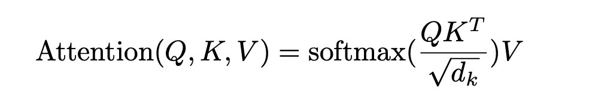
对于自注意力机制（Self-Attention）而言，查询向量（Query, Q）、键向量（Key, K）和值向量（Value, V）均由输入表示 (X) 通过不同的线性映射得到，即：
其中，W^q、W^k、W^v 为可学习的参数矩阵。通过这种方式，模型能够从同一输入表示中学习到不同语义空间下的特征表示。
为了更直观地理解 attention 的计算过程，可以用“在图书馆查找书籍”进行类比：Q 可以理解为读者当前的检索需求，K 类似于图书的类别信息与书名索引，而 V 则对应书籍的具体内容。在一次查找过程中，读者首先根据自身需求 Q，与图书的类别与书名信息 K 进行匹配，从而确定与需求最相关的书籍；随后，再根据匹配结果获取该书籍所包含的具体内容 V。对应到自注意力机制中，即通过计算 Q 与 K 的相似度来获得注意力权重，再对 V 进行加权求和，从而得到最终的表示。
在具体计算中，注意力得分由 (QK^T) 得到，并除以 (\sqrt{d_k}) 进行缩放，其中 (d_k) 为键向量的维度。引入缩放因子的原因在于，当向量维度较大时，点积结果的数值可能过大，导致 softmax 函数进入梯度饱和区域，从而造成梯度过小、训练不稳定的问题。通过除以 (\sqrt{d_k})，可以有效控制数值范围，提升训练稳定性。随后通过 softmax 对注意力得分进行归一化，使其转化为概率分布形式的权重。
下图给出了自注意力机制的具体计算流程示意。
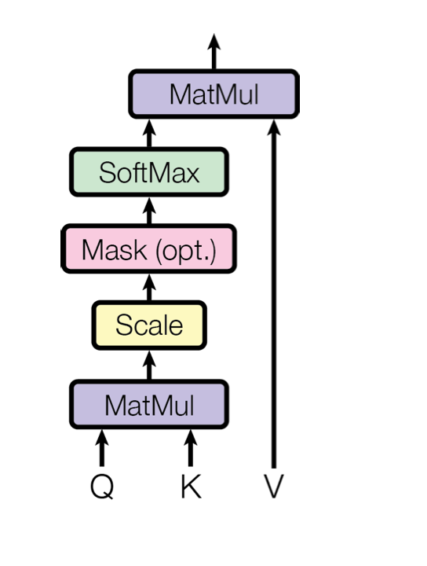
Multihead Attention
为了使注意力机制能够在不同的表示子空间中捕获多样化的特征关系，Transformer 引入了多头注意力机制（Multi-Head Attention），其结构如图所示。
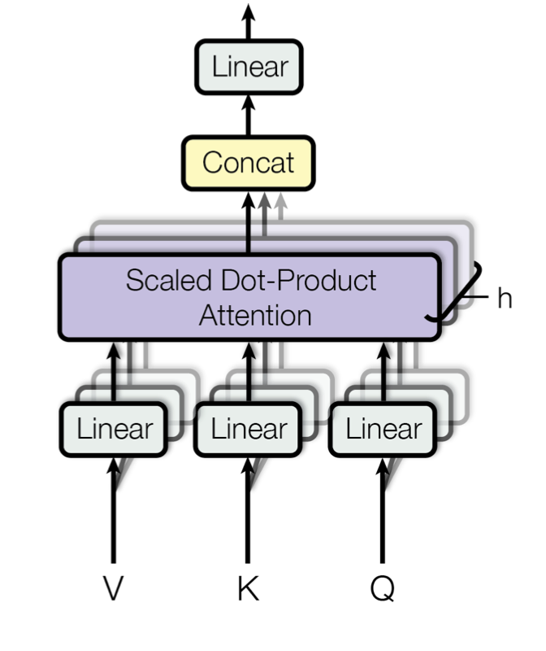
多头注意力是在单头自注意力（Self-Attention）的基础上进行扩展。具体而言，模型首先将输入表示分别通过多组不同的线性映射，得到多组 QiQi、KiKi、ViVi。每一组映射对应一个“头”（head），并在各自的子空间中独立地执行缩放点积注意力计算。不同的注意力头能够关注输入序列中的不同位置关系或语义特征，从而学习到更加丰富且互补的表示。
在所有注意力头分别完成计算后，其输出结果会在特征维度（隐空间维度）上进行拼接（concatenation），随后再通过一个线性变换进行融合，得到最终的多头注意力输出表示。形式化地表示为：
其中，每个 headi=Attention(Qi,Ki,Vi)，W^o 为输出线性映射矩阵。
通过这种机制，多头注意力不仅增强了模型的表达能力，还提升了模型对复杂语义关系和长距离依赖的建模能力，使其能够在多个特征子空间中并行学习不同类型的相关性结构。
Attention Block
在multi-head attention的基础上，加上skip connection、norm层和mlp层，就能够组成一个attention block。
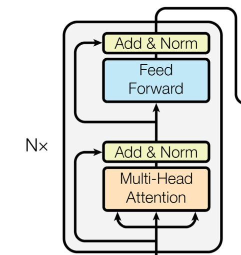
GPT架构
Token Embedding 和 Position Embedding
GPT的输入是形状为 [B, L] 的张量，B是批次大小，L是文本序列的长度。每一个值是一个码本中的索引。在GPT中，首先通过token embdding将文本中的每一个词（token）从索引变成维度为C的特征向量，此时输入形状变为[B, L, C]。前面提到，attention是全局注意力，也就是说对于模型而言，每个token所在的位置不会影响计算的结果。而文本的序列依赖很强，不同的词在文本不同位置的含义是不同的，为了让模型能够理解位置这一概念，需要做一个额外的position embedding。常用的position embdding是将一个[1, 2, 3, ..., L]的序列映射到特征维度为C的空间，然后加到输入的特征序列上。这里直接做加法能够奏效，是因为在高维空间中，XXX是正交的\cite{?}。
GPT 的输入通常表示为形状为 [B,L][B,L] 的整数张量，其中 BB 表示批次大小（batch size），LL 表示文本序列长度。张量中的每个元素对应词表（vocabulary）中的一个索引值，即 token 的离散编码表示。
在进入 Transformer 结构之前，模型首先通过 token embedding 层将每个离散索引映射为一个维度为 CC 的连续向量表示。此时，输入张量的形状变为 [B,L,C][B,L,C]，其中 CC 为隐藏特征维度（embedding dimension）。该过程本质上是一个可学习的查表操作，用于将符号空间映射到连续语义空间。
然而，前述自注意力机制本身是位置无关的（permutation-invariant）。也就是说，在不引入额外位置信息的情况下，模型无法区分“词语出现的顺序”，因为注意力计算仅基于 token 表示之间的相似度，而不显式编码位置信息。但自然语言具有显著的序列依赖特性，不同位置上的词语往往承担不同的语义角色。因此，需要显式地向模型注入位置信息，使其能够建模序列结构。
为此，GPT 引入了位置编码（Position Embedding）。常见做法是构造一个长度为 LL 的位置序列[1,2,3,…,L][1,2,3,…,L]，并通过一个可学习的 embedding 层将其映射到同样维度为 CC 的向量空间，得到形状为[L,C][L,C]的位置表示。随后，将位置向量与对应的 token 向量逐元素相加，从而得到融合位置信息的输入表示。
之所以可以采用简单的加法进行融合，是因为在高维表示空间中，不同来源的嵌入（token embedding 与 position embedding）可以在训练过程中自动调整其分布与尺度，从而在共享表示空间中形成相对独立的编码方向。加法操作不会显著破坏原有语义结构，反而为模型提供了一种线性且高效的信息融合方式。随后经过多层线性变换与非线性映射，模型能够在更高层次上解耦并重组“内容信息”与“位置信息”。
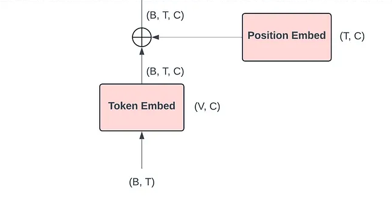
attention block
GPT中的attention block和2.1中提到的attention block架构类似，在 multihead attention 的基础上加上线性层、归一化层和 Feed Forward层。GPT中有多个串连的attention block，如12层对应12B的GPT大模型。
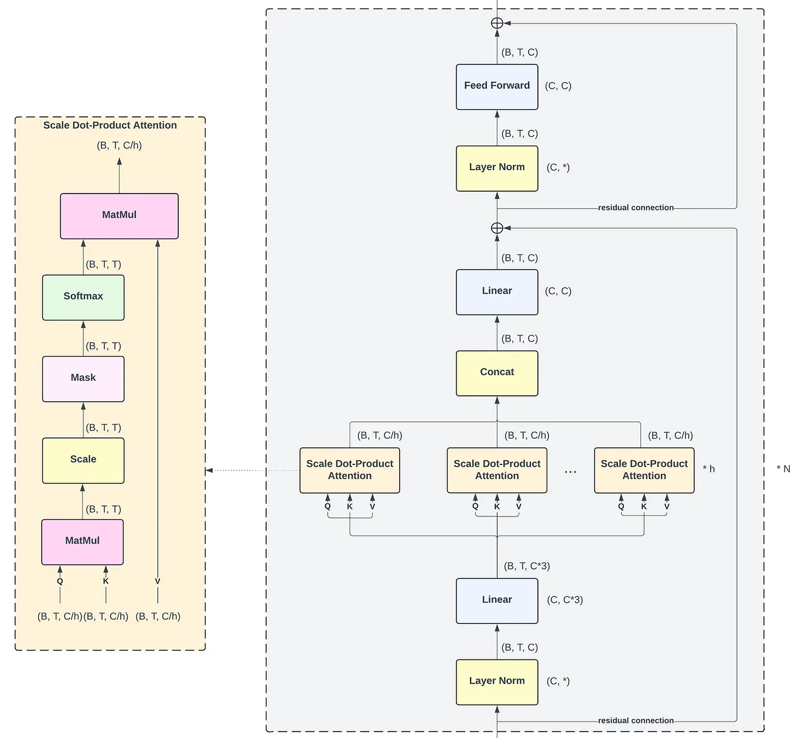
output head
在最后一层，GPT将attention block的输出做归一化后映射到码本大小的维度，然后通过softmax计算输出的每一个token对应的码本的索引得分logits。
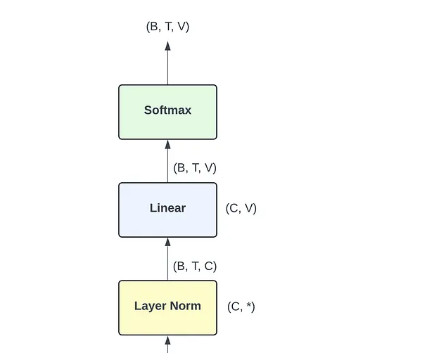
2. 大语言模型实现
此小节展示从零开始搭建GPT-2.0的过程，展示核心代码及实验结果。
GPT2.0复现
Multihead Attention
# attention head
class SingleHeadAttention(nn.Module):
def __init__(self, config):
super().__init__()
self.key = nn.Linear(config.hidden_dim, config.head_size, bias=False)
self.value = nn.Linear(config.hidden_dim, config.head_size, bias=False)
self.query = nn.Linear(config.hidden_dim, config.head_size, bias=False)
# attention mask
self.register_buffer("attention_mask",
torch.tril(torch.ones(config.block_size,
config.block_size)))
self.dropout = nn.Dropout(config.dropout)
def forward(self, X):
# X: BLC
batch_size, seq_length, hidden_dim = X.size()
k = self.key(X)
v = self.value(X)
q = self.query(X)
weights = q @ k.transpose(-2, -1) / torch.sqrt(torch.tensor(k.size(-1), dtype=torch.float32))
weights = weights.masked_fill(self.attention_mask[:seq_length, :seq_length] == 0, float("-inf"))
weights = F.softmax(weights, dim=-1)
weights = self.dropout(weights)
output = weights @ v
return output
class MultiHeadAttention(nn.Module):
def __init__(self, config):
super().__init__()
self.heads = nn.ModuleList([SingleHeadAttention(config) for _ in range(config.n_head)])
self.proj = nn.Linear(config.n_embd, config.n_embd)
self.dropout = nn.Dropout(config.dropout)
def forward(self, X):
head_outputs = [head(X) for head in self.heads]
concat = torch.cat(head_outputs, dim=-1)
output = self.proj(concat)
output = self.dropout(output)
return outputAttention Block
# transformer block
class Block(nn.Module):
def __init__(self, config):
super().__init__()
self.ln1 = nn.LayerNorm(config.n_embd)
self.ln2 = nn.LayerNorm(config.n_embd)
self.attn = MultiHeadAttention(config)
self.ffwd = FeedForward(config)
def forward(self, X):
X = X + self.attn(self.ln1(X))
X = X + self.ffwd(self.ln2(X))
return XFeed Forward
# mlp layer
class FeedForward(nn.Module):
def __init__(self, config):
super().__init__()
self.net = nn.Sequential(
nn.Linear(config.n_embd, config.hidden_dim * 4),
nn.GELU(),
nn.Linear(config.hidden_dim * 4, config.n_embd),
nn.Dropout(config.dropout)
)
def forward(self, X):
return self.net(X)GPT
# GPT model
class GPT(nn.Module):
def __init__(self, config):
super().__init__()
self.token_embedding = nn.Embedding(config.vocab_size, config.n_embd)
self.position_embedding = nn.Embedding(config.block_size, config.n_embd)
self.blocks = nn.ModuleList([Block(config) for _ in range(config.n_layer)])
self.ln_f = nn.LayerNorm(config.n_embd)
self.lm_head = nn.Linear(config.n_embd, config.vocab_size, bias=False)
# 现在的slm模型会用tie wieght减少参数
self.token_embedding.weight = self.lm_head.weight # important for tie weight
def _init_weights(self, Module):
if isinstance(Module, nn.Linear):
torch.nn.init.normal_(Module.weight, mean=0.0, std=0.02)
if Module.bias is not None:
torch.nn.init.zeros_(Module.bias)
elif isinstance(Module, nn.Embedding):
torch.nn.init.normal_(Module.weight, mean=0.0, std=0.02)
def forward(self, idx, targets=None):
# idx: token_ids, targets: token_ids
batch, seq_length = idx.size()
token_emb = self.token_embedding(idx)
position_ids = torch.arange(seq_length, dtype=torch.long, device=idx.device)
position_emb = self.position_embedding(position_ids)
x = token_emb + position_emb
for block in self.blocks:
x = block(x)
x = self.ln_f(x)
logits = self.lm_head(x)
if targets is None:
loss = None
else:
batch, seq_length, vocab_size = logits.size()
logits = logits.view(batch * seq_length, vocab_size)
targets = targets.view(batch * seq_length)
loss = F.cross_entropy(logits, targets)
return logits, loss
@torch.no_grad()
def generate(self, idx, max_new_tokens=50):
for _ in range(max_new_tokens):
idx_cond = idx[:, -512:]
logits, _ = self.forward(idx_cond)
# 取最后一个时间步
logits = logits[:, -1, :]
probs = F.softmax(logits, dim=-1)
# 采样一个 token
next_token = torch.multinomial(probs, num_samples=1)
idx = torch.cat((idx, next_token), dim=1)
return idx
@torch.no_grad()
def generate_enhanced(self, idx, max_new_tokens=100, temperature=0.8, top_k=10):
for _ in range(max_new_tokens):
# 截断 context
idx_cond = idx[:, -512:]
logits, _ = self.forward(idx_cond)
# 1. 提取最后一个时刻的 logits 并除以温度
logits = logits[:, -1, :] / temperature
# 2. Top-K 过滤
v, _ = torch.topk(logits, min(top_k, logits.size(-1)))
logits[logits < v[:, [-1]]] = -float('Inf')
# 3. 采样
probs = F.softmax(logits, dim=-1)
next_token = torch.multinomial(probs, num_samples=1)
idx = torch.cat((idx, next_token), dim=1)
return idx实验结果
Dataset构建及模型训练
Dataset构建：
# 构建输入的 dataset
class MyDataset(Dataset):
def __init__(self, path, block_size=512):
# 使用 mobvoi_seq_monkey_general_open_corpus.jsonl 数据集，
# 读取前 1000 行
import tiktoken
self.enc = tiktoken.get_encoding("gpt2")
self.block_size = block_size
self.eos_token = self.enc.encode(
"<|endoftext|>",
allowed_special={"<|endoftext|>"}
)[0]
import json
self.encoded_data = []
self.max_lines = 1000
raw_data = []
with open(path, 'r') as f:
for i, line in enumerate(f):
if i >= self.max_lines:
break
try:
text = json.loads(line.strip())['text']
raw_data.append(text)
except json.JSONDecodeError:
continue
except Exception as e:
continue
full_encoded = []
for text in raw_data:
encoded_text = self.enc.encode(text)
full_encoded.extend(encoded_text + [self.eos_token])
# 将长文本分割成训练样本
for i in range(0, len(full_encoded), self.block_size):
# 多取一个 Token 作为目标
chunk = full_encoded[i:i+self.block_size+1]
# 如果长度不够，用 eos_token 填充
if len(chunk) < self.block_size + 1:
chunk = chunk + [self.eos_token] * (self.block_size + 1 - len(chunk))
self.encoded_data.append(chunk)
def __len__(self):
return len(self.encoded_data)
def __getitem__(self, idx):
chunk = self.encoded_data[idx]
x = torch.tensor(chunk[:-1], dtype=torch.long)
y = torch.tensor(chunk[1:], dtype=torch.long)
return x, y
def encode(self, text):
"""将文本编码为token IDs"""
return self.enc.encode(text)
def decode(self, ids):
"""将token IDs解码为文本"""
return self.enc.decode(ids)加载模型：
# 模型训练
# train data
train_dataset = MyDataset('/content/data/mobvoi_seq_monkey_general_open_corpus.jsonl')
# split traindataset to train and val
train_dataset, val_dataset = torch.utils.data.random_split(train_dataset, [0.9, 0.1])
train_loader = DataLoader(train_dataset, batch_size=12, shuffle=True)
val_loader = DataLoader(val_dataset, batch_size=12, shuffle=False)
model = GPT(GPTConfig())
device = "cuda" if torch.cuda.is_available() else "cpu"
model = model.to(device)
# 打印模型一共有多少参数
total_params = sum(p.numel() for p in model.parameters())
print(f"Total parameters: {total_params / 1e6} M")
optimizer = torch.optim.AdamW(model.parameters(), lr=3e-4)
# 设置 cosine 学习率
scheduler = torch.optim.lr_scheduler.CosineAnnealingLR(optimizer, T_max=1000)训练模型：
# 模型训练
# train data
train_dataset = MyDataset('/content/data/mobvoi_seq_monkey_general_open_corpus.jsonl')
# split traindataset to train and val
train_dataset, val_dataset = torch.utils.data.random_split(train_dataset, [0.9, 0.1])
train_loader = DataLoader(train_dataset, batch_size=12, shuffle=True)
val_loader = DataLoader(val_dataset, batch_size=12, shuffle=False)
model = GPT(GPTConfig())
device = "cuda" if torch.cuda.is_available() else "cpu"
model = model.to(device)
# 打印模型一共有多少参数
total_params = sum(p.numel() for p in model.parameters())
print(f"Total parameters: {total_params / 1e6} M")
optimizer = torch.optim.AdamW(model.parameters(), lr=3e-4)
# 设置 cosine 学习率
scheduler = torch.optim.lr_scheduler.CosineAnnealingLR(optimizer, T_max=1000)
# 训练循环
def train(model, optimizer, scheduler, train_loader, val_loader, device):
model.train()
total_loss = 0
for batch_idx, (x, y) in enumerate(train_loader):
# 将数据移到设备上
x, y = x.to(device), y.to(device)
# 前向传播
logits, loss = model(x, targets=y)
# 反向传播
optimizer.zero_grad()
loss.backward()
optimizer.step()
# 调整学习率
scheduler.step()
total_loss += loss.item()
if batch_idx % 100 == 0:
print(f'Epoch: {epoch}, Batch: {batch_idx}, Loss: {loss.item():.4f}')
return total_loss
def eval(model, val_loader, device):
# 验证
model.eval()
val_loss = 0
with torch.no_grad():
for x, y in val_loader:
x, y = x.to(device), y.to(device)
logits, loss = model(x, targets=y)
val_loss += loss.item()
return val_loss
for epoch in range(2):
train_loss = train(model, optimizer, scheduler, train_loader, val_loader, device)
val_loss = eval(model, val_loader, device)
print(f'Epoch: {epoch}, Train Loss: {train_loss/len(train_loader):.4f}, Val Loss: {val_loss/len(val_loader):.4f}')实验结果
我们使用的数据集是mobvoi_seq_monkey_general_open_corpus，一个被广泛用于问答系统、自然语言处理、机器翻译、文本摘要等领域的超大规模语言数据集。迭代epoch为100，模型参数量为128M。
训练loss
实验使用的损失是交叉熵损失，由下图可以看到，一开始随着epoch的迭代，训练损失和测试损失都迅速下降。在epoch大概为30时，在测试集上的损失达到了最小值，validation loss=1.9，困惑度约为9，效果较好。相当于对于一个大小5万的码本，每次能只从9个码本中做预测。
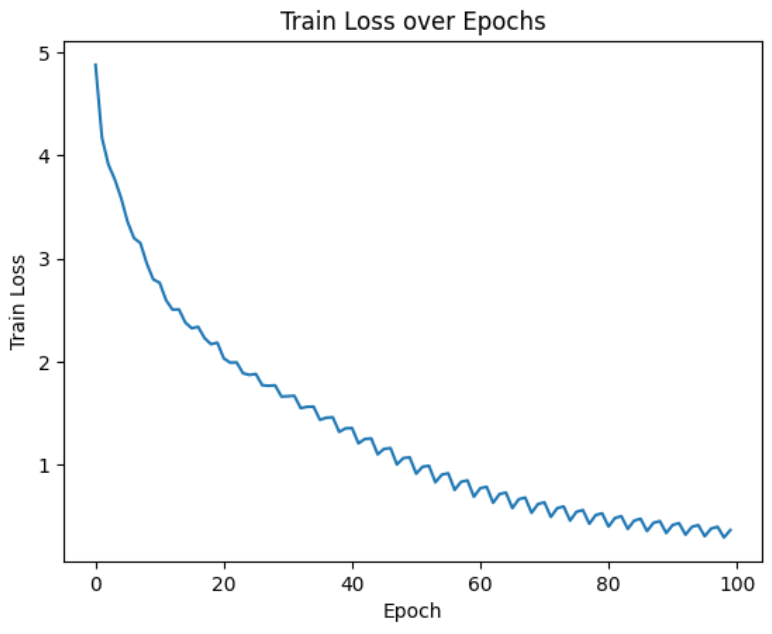
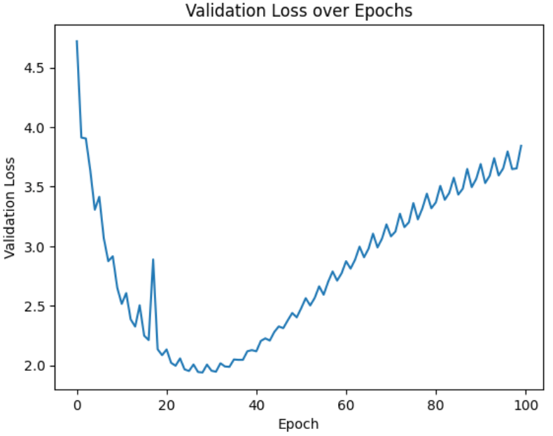
模型推理
首先加载模型：
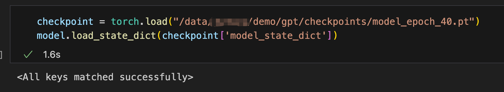
对于测试样本：
不训练模型，直接推理的效果如下图，可以看到生成的文字完全没有任何逻辑，并且生成的全是英文。
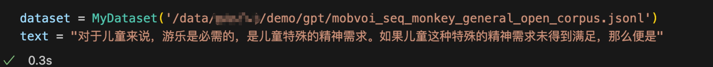
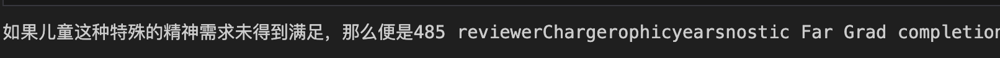
使用训练后的模型进行推理：
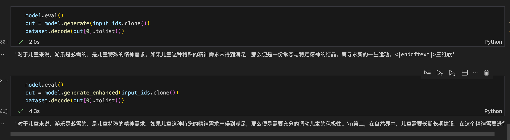
其中 generate 是使用简单的multinomial进行采样，generate_enhance是带tempreture和top-k的版本，可以看到，gpt生成的文字明显具备一定的逻辑，其中使用tempreture和top-k的版本对上文的关注更强，能够捕捉到“儿童”这一关键词，但总的来说生成的效果一般，这里可能是因为只使用了少部分数据集，且训练时间短，模型训练不充分。
大语言模型微调
基于海量语料数据预训练的大语言模型通常具备较强的泛化能力，能够在多种下游任务中取得良好表现。然而，在特定领域或垂直场景中（如医疗、法律、金融等），通用预训练模型往往难以充分适配专业数据分布与任务需求。因此，有必要基于领域数据对预训练模型进行进一步微调（fine-tuning），以提升其在特定场景下的性能表现。
然而，大语言模型通常具有数十亿甚至上百亿参数，若对全部参数进行全量微调（full fine-tuning），不仅需要巨大的显存与计算资源支持，同时也带来较高的存储与部署成本。这种高昂的资源开销使得个人开发者或中小型团队难以承担。
为缓解上述问题，近年来学界提出了一系列参数高效微调方法（Parameter-Efficient Fine-Tuning, PEFT）。这类方法的核心思想是在保持原有预训练模型参数大部分冻结的前提下，仅对少量新增或特定结构中的参数进行训练，从而在显著降低计算与存储成本的同时，实现接近全量微调的性能效果。
本小节将重点介绍其中一种被广泛应用的方法——LoRA（Low-Rank Adaptation）。LoRA 通过对权重更新矩阵进行低秩分解，在不修改原始权重的情况下引入可训练的低秩增量参数，从而实现高效且可扩展的大语言模型微调。
对于任意一个矩阵W，都可以对其进行低秩分解，将一个很大的矩阵拆分为两个小矩阵（A, B），在训练过程中不去改变W的参数，而去改变A、B，具体可以表示为：
最终在训练计算的时候是：
假设W的是 [n, m] 的矩阵，那么A是 [n, r] , B是[r, m]，并且 n 和 m 远大于r。通过LoRA，要训练的参数量从 nm 减少到了 r(n+m)，参数量显著减少。
下面是我们根据原理复现的LoRA：
class LinearLoRALayer(nn.Module):
def __init__(self, in_features, out_features, rank, lora_alpha, dropout, merge=False) -> None:
super().__init__( )
self.in_features = in_features
self.out_features = out_features
self.rank = rank
self.lora_alpha = lora_alpha
self.dropout = dropout
self.merge = merge
self.linear = nn.Linear(in_features, out_features)
if rank > 0:
self.lora_a = nn.Parameter(torch.randn((in_features, rank)))
# 高斯分布
nn.init.kaiming_uniform_(self.lora_a, a=math.sqrt(5))
self.lora_b = nn.Parameter(torch.randn((rank, out_features)))
self.scale = lora_alpha / rank
self.dropout = nn.Dropout(dropout) if dropout >0 else nn.Identity()
# merge:
if merge:
self.merge_weights()
def merge_weights(self):
if self.rank > 0 and self.merge:
weight = self.linear.weight.data
weight += (self.lora_b @ self.lora_a.T).T * self.scale
self.linear.weight.data = weight
def unmerge_weights(self):
if self.rank > 0 and self.merge:
weight = self.linear.weight.data
weight -= (self.lora_b @ self.lora_a.T).T * self.scale
self.linear.weight.data = weight
def forward(self, X):
# X:(B, S, H)
if self.rank > 0:
output_1 = self.linear(X) # (B, S, H_out)
output_2 = self.scale * (X @ (self.lora_a @ self.lora_b)) # (H_out, H_in)
output = output_1 + output_2
else:
output = self.linear(X)
output = self.dropout(output)
return output